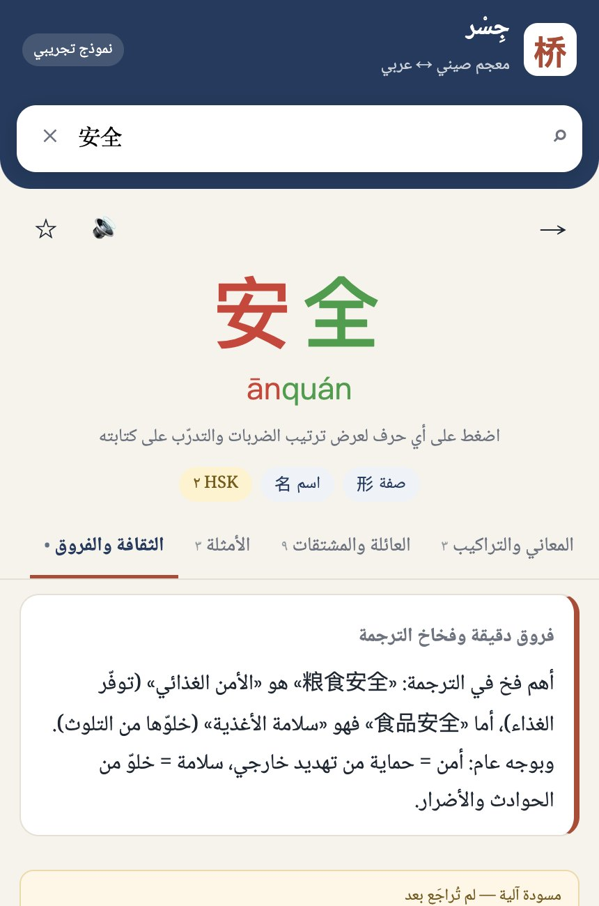
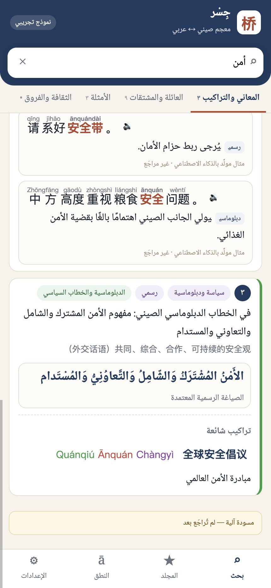
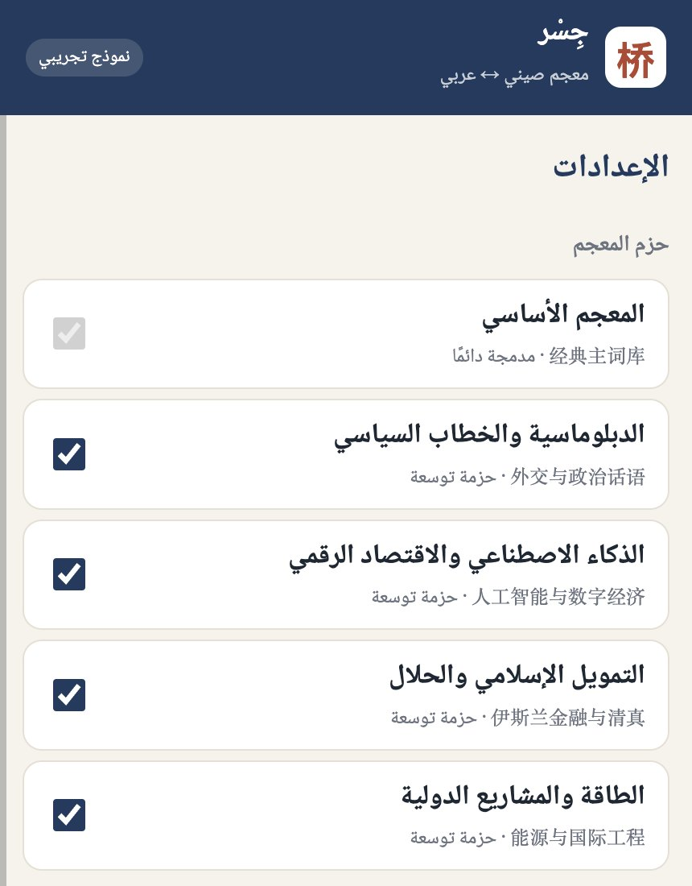
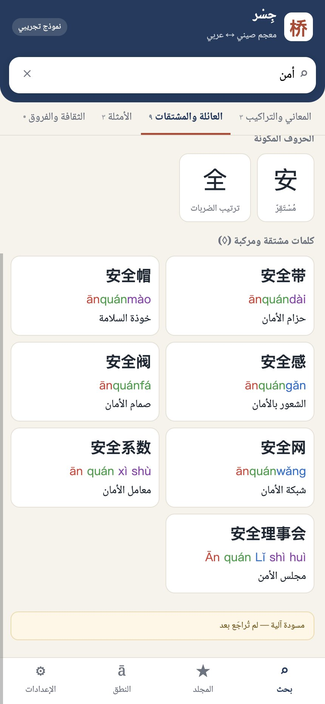
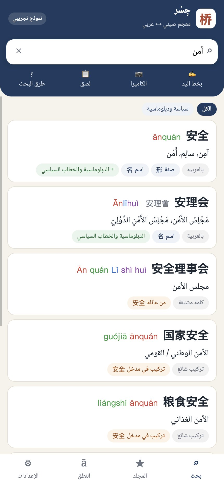
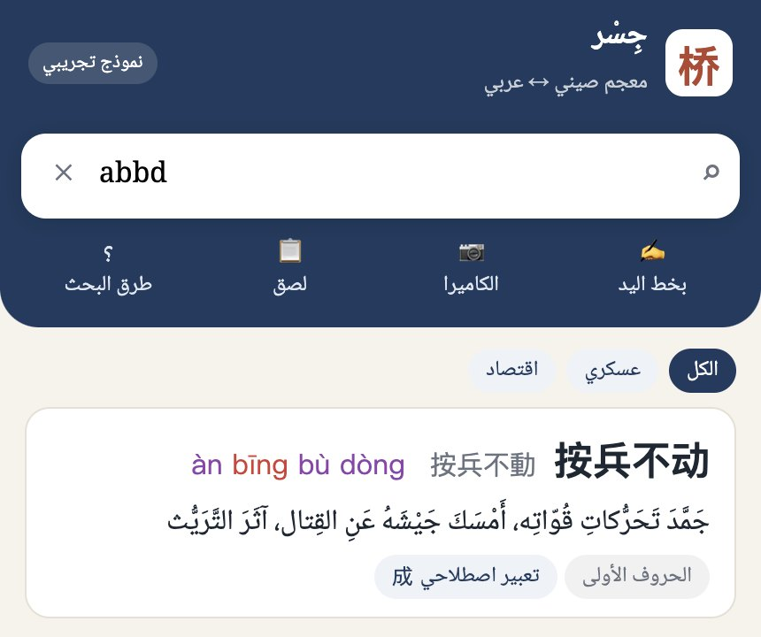

合作说明 · 呈对外汉语学院
面向阿拉伯语母语者的汉语词典
核心是一套可以持续生长、可以审定、可以进入课堂的中阿词汇数据
摘要
- 市场上已经有中阿词典 App，如智慧宫 WPT 和麦阿尼中阿词典。它们收词多，并且带翻译功能。我们不在收词数量上和它们竞争。
- 我们做的是数据的组织方式。每个中文义项对应几个阿语译法，并分别标出语域、介词搭配和词根。每一条都带来源和审定状态，可以单独更新。条与条之间可以互相跳转：字带出词族，词带出搭配，搭配带出辨析，阿语词根也能反查回中文。这三件事决定了一部词典能否被译者信任、被教师用于教学。
- 查询要从阿语母语者的实际起点出发。样品已经支持八种键入方式，另有手写、拍照和点词续查，用户不需要先切换语言或模式。
- 以后可以往上叠加内容。新的专业领域、教学层、课程词表、阅读器和复习功能，都挂在同一套词条上，不必另起炉灶。
- 希望学院参与的是教学层和审定，不是事后作序。第一步很小：一次演示、两位教师评审、一个小班试用两周。
一阿拉伯学生查中文，难在哪里
沙特、阿联酋等国已经把中文纳入国民教育，来华的阿拉伯留学生、译者和外交、商务人员也在增加。他们查中文时遇到的困难，和英语母语者不完全一样：
| 处境 | 具体表现 | 对词典的要求 |
|---|---|---|
| 见字不会读 | 看到汉字打不出拼音，只能截图去问别人 | 手写、拍照必须是主要入口，不是附加功能 |
| 用阿语字母套读拼音 | q 读成 ق，h 读成 ه，声调完全陌生 | 拼音说明要用阿语写，指出具体误读 |
| 要的是阿语译法 | 中文释义看不懂；一个中文词只给一个阿语词，往往选错 | 同一义项给多个阿语译法，标出语域、介词搭配、词根 |
| 中阿概念不对称 | 粮食安全 ≠ 食品安全；矮、低、短在阿语里难以分辨 | 专门的辨析与「翻译陷阱」 |
| 汉语语法难点 | 量词、离合词（「安了家」）、补语 | 每个名词给量词，离合词给可拆开的说法 |
二竞品：现有产品各自做到了什么
院长提出的竞品问题很关键。下表依据各产品在应用商店和官网上的公开介绍整理，收词数字均为厂商自述。
| 产品 | 主要用户 | 公开介绍里的强项 | 对阿语母语者仍然缺的 |
|---|---|---|---|
| 智慧宫 WPT | 中阿双向学习者、从业者 | 称汇集国内外主流中阿词典，约 40–60 万词条；在线翻译、语音、拍照翻译、人工翻译；有「学中文」模式、HSK 词表、汉字书写练习；中、阿、英三种界面 | 以汇集和翻译为主。公开介绍没有说明义项级的阿语译法区分、每条的来源与审定状态，也没有说明专业词按领域分包更新 |
| 麦阿尼中阿词典 | 明确面向学中文的阿拉伯人 | 称约 35 万条阿语数据；中、阿、英三语 OCR；中文发音与汉字学习；收录阿语单语词典内容 | 强项在阿语一侧，例如词根、时态和阿语单语释义。中文一侧的量词、离合词、易混词，以及中阿对译陷阱，公开介绍中较少提及 |
| 纸质《汉语阿拉伯语词典》 | 以中国的阿语学习者和译者为主 | 北京大学编，单字六千余，词条与词化短语十万余，义项与译法权威 | 无法检索，按拼音翻页；更新要等整本再版，修订版距今已十二年；没有发音，也不能点击跳转 |
| Pleco 等中英词典 | 英语母语者 | 检索、手写、拍照、阅读器、复习，是功能上的标杆 | 没有阿语。官方说明暂无扩展到其他语言版本的计划，阿拉伯学生只能借英语转一道 |
| 机器翻译、对话模型 | 所有人 | 整句即时翻译 | 不是词典：同一个词两次结果可能不同，不能指定「从今天起采用审定译法」，也没有词与词的结构 |
| 本项目 | 阿语母语的学习者、译者、外交和商务人员 | 义项级多译法与标注；逐条可审定、可更新；词与词的关系网络；面向阿语母语者的中文难点数据；与学院共建的教学层 | 收词量起步小，需要分阶段扩充；识别类功能要换成商用引擎（见第五节） |
三核心价值：数据本身
界面一年内就能被别人仿出来，成体系、经过审定的数据仿不出来。下面分四个方面说明：丰富、实时、词与词的拓展性，以及可信。
3.1 丰富：一个词条有多层信息
常见的对译词典，一个词往往只给一行译文。我们的数据结构把一个词拆成十几个可以单独使用的层次，每一层都服务一个具体的使用场景。


3.2 实时：按词条更新，不等再版
纸质词典的内容停在出版那一年。修订版出版至今已经十二年，「大模型」「光伏」「一带一路」的官方阿语译法都不在书里。我们的数据以词条为单位独立更新，并分三种节奏：
这里说的「实时」，指的是词库一直在维护：课堂上刚确定的译法，下一次推送后学生就能查到。追加内容只增加、不覆盖。例如外交包给「安全」新增一个义项，原有的两个义项和审定记录保持不变。


3.3 词与词的拓展性：一个词连着一张网
学生查完一个词，应该能顺着关系继续查下一个，而不是查完就结束。译者真正翻译的单位往往不是单词，而是搭配。我们把纸质词典里只能看、不能点的「◊ 词族」「参见」，以及隐含的搭配和对译关系，都变成可以点击和检索的连接。
同一张网也可以从阿语进入。在样品里输入 أمن，一次会找到九条结果：主词「安全」、外交包里的「安理会」、派生词「安全理事会」，以及「国家安全」「粮食安全」「网络安全」「全球安全倡议」等搭配。阿语母语者心里先有阿语概念，再去找中文说法，这条反向路径对他们尤其重要。
| 关系 | 样品中的例子 | 对学生和译者的用处 |
|---|---|---|
| 字 → 词 | 安 → 安全、安排、安家、安静 | 按字头成批记词，适合词汇课 |
| 词族 | 安全 → 安全带、安全阀、安全系数 | 原书 ◊ 后的派生词升为独立词条，可以直接搜到 |
| 搭配 | 粮食安全、食品安全、安理会决议 | 翻译的实际单位，每条附阿语译法 |
| 辨析 | 矮 / 低 / 短；粮食安全 / 食品安全 | 直接可用于纠错教学 |
| 阿语反查 | 单词 أمن；短语 الأمن الغذائي；词根 س ل م | 从阿语概念找到中文说法 |
| 参见 | 安拉 ↔ 真主 | 同义词和文化差异放在一起看 |
| 例句点词 | 「请系好安全带」中每个词都可点 | 读一句话就能查一串词 |


3.4 可信：每一条都能追溯
数据能否被教师和译者采用，取决于是否可信。我们为每个义项、每个译法、每条例句记录来源（原书参照、公开词表、AI 起草、编辑撰写、用户反馈）和审定状态。正式版只发布审定通过的内容；样品中的 AI 内容都标为「未审」。
版权方面：纸质词典只用作选词和查漏的参照，不复制其中的阿语释义和例句。例句全部重新生成，再经人工审定。我们同时准备与出版方洽谈授权。1989 年商务版和 2014 年北大社修订版都可以作为洽谈对象。
四查询的便利性：从用户手里的线索出发
阿语母语者开始查词时，手里的线索各不相同。搜索框会自动判断输入的是汉字、拼音还是阿语，用户不需要切换。下表按「手里有什么」整理，每一种都可以在样品里试。
| 手里有什么 | 怎么查 | 在样品里输入 | 说明 |
|---|---|---|---|
| 看到汉字，不会读 | 手写 | 手写面板，逐字写 | 写一个字点一个候选，可以连写成词 |
| 拍照 / 相册 | 相机按钮 | 识别出一行字，点选需要的字再查 | |
| 粘贴 | 粘贴按钮 | 从微信、网页复制过来的字直接查 | |
| 看到汉字，会打 | 汉字（简体和繁体） | 安全 | 完全一致的排在前面，其次是以它开头的和包含它的 |
| 听到读音 | 拼音，不带声调 | anquan | 空格、隔音符号可省；ü 可写成 v 或 u |
| 拼音首字母 | abbd | 找到「按兵不动」，适合成语和长词 | |
| 声调符号或数字声调 | ānquán an1quan2 | 区分同音不同调的词 | |
| 通配符 | an* 安* | 只记得开头时使用 | |
| 心里有阿语词 | 阿语单词 | سلامة | 带不带元音符号都行；ة/ه、أ/إ/ا、ى/ي、波斯键盘字母自动统一；冠词和介词前缀自动去掉 |
| 阿语短语 | الأمن الغذائي | 直接找到搭配「粮食安全」 | |
| 阿语词根 | س ل م 或 جذر:سلم | 按词根找出所有相关中文词，这是阿语使用者熟悉的查法 | |
| 正在读一段中文 | 点词续查 | 点例句中的任意词 | 底部弹出简明释义，可以一路点下去 |
查到以后，词条页还提供：声调颜色、发音、逐字笔顺动画、按项目分组的术语夹（可导出表格和 Anki 卡片），以及本机查询历史。拼音指南用阿语写成，直接指出「q 不读 ق、h 不读 ه」这类误读，中英词典不会提供这种说明。

abbd 找到「按兵不动」，结果下方标明是按首字母命中的。

五未来的拓展性：在同一套词条上继续叠加
数据结构先定好，以后的内容和功能都挂在同一套词条上，不推倒已有内容。可以拓展的方向有四条：
| 方向 | 内容 | 学院可以参与的部分 |
|---|---|---|
| 内容 | 更多专业包：医学、法律、新闻、工程、旅游、清真产业；海湾、马格里布等地区的阿语用法标注 | 与相关专业合作出专题词表 |
| 教学 | HSK 等级、课程词表、易错说明作为一层挂在词条上；教师可以给班级推送词表 | 由学院维护这一层并署名，主译法仍走审定流程 |
| 产品 | 整段文章点查的阅读器；术语夹生成复习卡片；教师端和班级；网页版和手机端共用一套数据 | 提出课堂需求，参与试用 |
| 研究 | 匿名统计阿拉伯学习者「查不到」「查错」「反复查」的词，得到真实的学习难点数据 | 可以支持论文、教材编写和课题申报 |
| 阶段 | 目标 | 完成标志 |
|---|---|---|
| 现在 | 网页样品：数据结构、八种检索、手写拍照、四个专业包 | 可以当场演示，约四十个词条 |
| 第一阶段 | 首批常用词（建议以 HSK 一至四级相关词为主）完成审定；建立审定后台 | 一个年级可以用它上课 |
| 第二阶段 | 手机 App，离线可用；商用识别引擎；阅读器和复习功能 | 上架，小范围对外试用 |
| 第三阶段 | 扩充到数万条；更多专业包；教师端和班级功能 | 可以对阿拉伯国家的院校和机构推广 |
六合作方式
| 学院 | 我们 | |
|---|---|---|
| 内容 | 教学层：课程词表、易错说明、例句审定 | 数据结构、AI 起草、编辑流程、版权路径 |
| 技术 | 提出课堂需求 | 网页和 App 开发、检索、识别、更新发布 |
| 使用 | 组织阿拉伯学生试用并反馈 | 根据反馈迭代，提供匿名的使用统计 |
| 署名 | 审定内容署学院和教师姓名 | 产品中明确标注合作单位 |
对学院来说，可以得到一个能直接用于阿拉伯学生教学的工具，一份关于阿拉伯学习者难点的研究数据，学生参与审定的翻译实践机会，以及可以申报的合作课题。第一步只需要投入很少的时间：
- 一小时演示。请院长和老师在手机上试：安全、abbd、س ل م、أمن，再点开「安全带」和底部的「النطق」（发音指南）。
- 两位教师评审三块数据。拼音误读说明、量词和离合词、翻译陷阱，判断它们是否值得进入课堂。
- 一个阿拉伯学生小班试用两周。只观察三点：从汉字、拼音、阿语三种起点能不能查到；会不会顺着词族和搭配继续查；陷阱提示是否有用。
- 如果试用效果成立，学院选定一个年级或一门课，作为第一批教学层词汇；我们负责把它接入词典，并署学院和教师的名字。
这一步不涉及投资，也不涉及独家条款。
附一样品现状
为了诚实地说明现状：样品目前约有四十个词条，用来验证数据结构、检索方式和更新机制，不是成品词库。其中的阿语释义和例句由 AI 起草，尚未经人工审校，不能作为教材或正式译文使用。宗教相关词条在正式版中会单独送审。
附二建议的竞品对比测试词
建议用下面十组词，在智慧宫 WPT、麦阿尼、纸质词典和本样品中逐一查询，比较能否查到、译法是否准确、有没有辨析和搭配。
| 测试词 | 看什么 |
|---|---|
| 粮食安全 / 食品安全 | 两个阿语译法是否区分清楚 |
| 安家 | 是否说明离合用法「安了家」 |
| 矮 / 低 / 短 | 有没有辨析 |
| 暗示 | 阿语动词是否注明介词 إلى |
| 一带一路 | 是否采用官方阿语译名 |
| 人类命运共同体 | 外交表述是否规范 |
| 大模型 / 光伏 | 新词是否收录 |
| 伊斯兰债券 | 专业术语是否准确 |
| 安拉 / 真主 | 有没有文化说明 |
| 输入 سلامه（ة 写成 ه） | 阿语拼写不规范时能否查到 |
竞品信息来自 2026 年 10 月各产品在 App Store、Google Play 和官网上的公开介绍，收词数为厂商自述，未经我们验证，以实际测试为准。纸质词典信息来自出版方和北京大学公开资料。截图来自本项目网页样品。